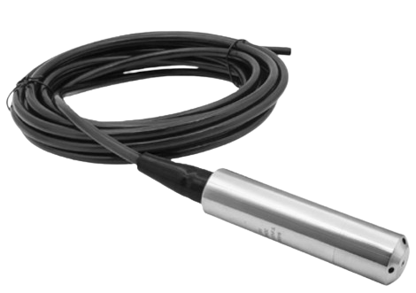
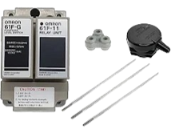
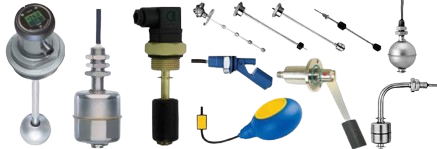

อาศัยหลักการความสัมพันธ์ระหว่างความดันที่ก้นถังกับความสูงของของเหลวดังกฎของปาสคาลว่าความดันที่จุดใดๆในของเหลวที่หยุดนิ่งจะแปรผันตามความลึก
$$P=ρgh$$
P คือ ความดัน
ρ คือ ความหนาแน่นของของเหลว
g คือ แรงโน้มถ่วง
h คือ ความสูงของระดับน้ำ

เซนเซอร์ใช้หลักการตรวจจับการนำไฟฟ้าของของเหลว เมื่อระดับของเหลวสูงจนสัมผัสก้านอิเล็กโทรดที่ระหว่างก้านวัดและก้านอ้างอิงทำให้ครบวงจรไฟฟ้าทำให้วงจรภายในของตัวควบคุมตรวจจับสถานะของเหลวได้
เซนเซอร์ชนิดนี้ใช้สำหรับการตรวจจับระดับแบบจุด เช่น ระดับต่ำ ระดับสูง หรือระดับ แต่อย่างไรก็ตามเซนเซอร์ชนิดนี้สามารถใช้งานได้เฉพาะกับของเหลวที่นำไฟฟ้าได้เท่านั้น เช่น น้ำประปา น้ำเสีย หรือสารละลายต่าง ๆ และไม่เหมาะกับของเหลวที่ไม่นำไฟฟ้า เช่น น้ำมัน หรือน้ำกลั่นบริสุทธิ์

เป็นอุปกรณ์วัดระดับแบบเชิงกลที่อาศัยแรงลอยตัวของของเหลว โดยภายในมีสวิตช์และลูกบอลโลหะเมื่อลูกลอยขึ้นตามระดับน้ำจะทำให้หน้าสัมผัสเปลี่ยนสภาวะ